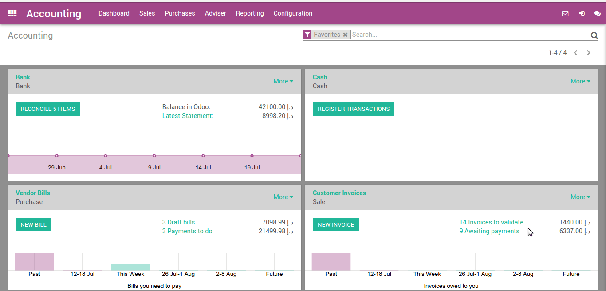
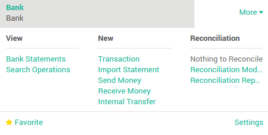
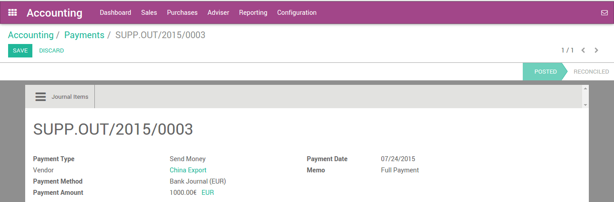

Odoo provides a simple and effective way to handle several bills at once, with various quick or complex options. With one single process, anyone is able to handle bills and payment in just a few clicks.
Pay multiple bills with one payment
Record several payments
In the following example, we will generate some bills. You can control the whole process from your accounting dashboard (first screen you get when you open the accounting application).
To create a bill, open the Dashboard menu and click on Vendor Bills. In the Vendor Bills window, click on Create.

Choose the vendor from which you wish to purchase the product, and click on Add an item to add one (or more) product(s). Click on Save and then Validate.
Pay supplier bills, one after the other

We will now record a payment for one bill only. Open the bill, then click on Register Payment. Insert the Payment Method, Date and Amount, and click on Validate.

Once you have validated the payment, the system will automatically reconcile the payment with the bill, and set the bill as Paid. The system will also generate a move from the payment account and reconcile it with the expense transaction.
Pay several bills altogether
In order to illustrate the process thoroughly, create at least 2 more bills following the above standing guide. Make sure all bills come from the same vendor.

In the Vendors Bills, select the new bills you have just created by checking the box next to each of them. In the Action menu located in the middle of the page, click on Register Payment.

Insert the details of the payment. The system calculated the total amount for both bills, but you can modify it freely. Click on Validate.
Record the payment, reconcile afterwards
You can also reconcile a payment with bills after the payment has been recorded.
First, we need to create a payment
This will handle from
Creating payment order with check payment method. Selecting related Vendor and amount which remain to pay. After filling all details, we will confirm the payment order which will generate payment transaction with the system.
As you can see, bill payment status show what is posted and what is remaining to reconcile.
After receiving bank statement from the bank with payment detail, you can reconcile the transaction from the Dashboard. It will automatically map the transaction amount.
См.также
For more detail on the bank reconciliation process, please read:
Partial payments of several supplier bills
How to pay several supplier bills having cash discounts at once?
You already learned how to pay bills in various way but what about partial payment? We are taking another example where we will do partial payment for various bills.
We are creating multiple bills and partially pay them through bank statements.
We are adding payment terms which allow some cash discount where vendor offer us early payment discount.

We are creating the following bills with the assignment of the above payment term.

We have created the following bills:

We will pay the invoices by creating bank statement where we will adjust the cash discount our vendor provided under payment terms.

Before reconciling this bank statement, we need to create one statement model for cash discount.

Now we are going back to bank statement and opening reconcile view.